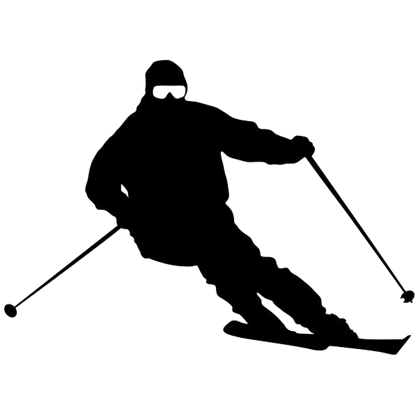
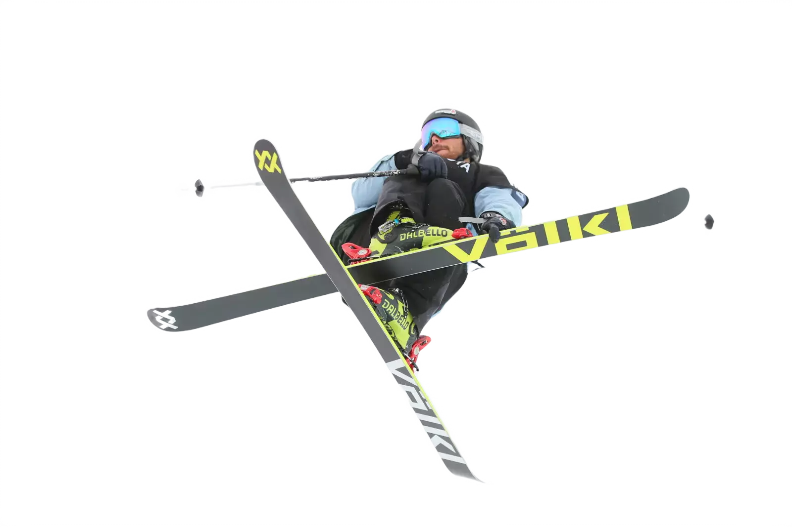

My hobbies
Le coeur serré en haut de la crête, descendre en ligne droite dans le couloir, enchaîner les grandes courbes en regardant les nuages passer au loin. Le plaisir de la liberté, avec des fats aux pieds.
Si vous voulez savoir quelle plongée, imaginez le mouvement sans se presser sous l'eau, entouré par des hauts-fonds de poissons différents à une profondeur de plusieurs dizaines de mètres. Ou une étude tranquille du squelette d'un navire naufragé. Présenté? Excellent, parce que la réalité est même vos rêves dépasse les plus chers

« Le sport va chercher la peur pour la dominer, la fatigue pour en triompher, la difficulté pour la vaincre »